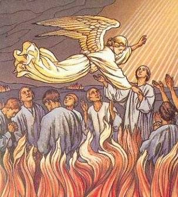
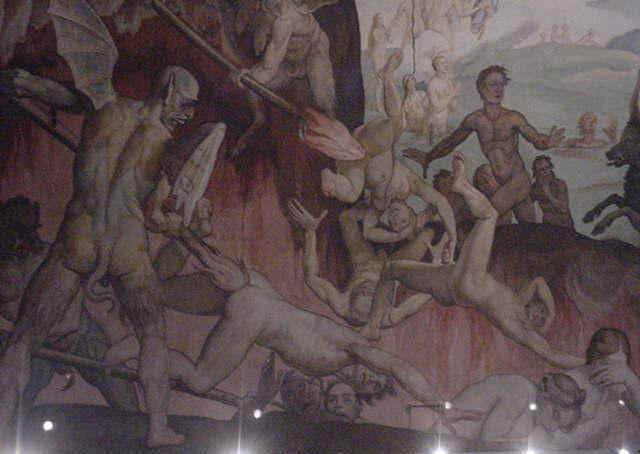
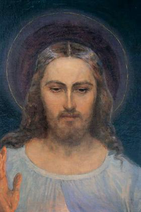

O PURGATÓRIO, O INFERNO E O CÉU
Novembro/1935 – PURGATÓRIO
Anoitecendo, vi o meu Anjo
da Guarda que me mandou acompanhá-lo. Imediatamente me encontrei
num lugar coberto de névoas, cheio de fogo, e, dentro deste fogo, uma multidão
de almas sofredoras. Essas almas rezavam com muito fervor, mas sem qualquer
resultado para elas mesmas. Isto porque, só nós podemos ajudá-las. Elas já
viveram e escreveram a sua trajetória existencial, agora estão no Purgatório, se
purificando de seus pecados para alcançar o Céu. As chamas que as queimavam não
me tocavam. O meu Anjo da Guarda não se afastava de mim, nem por um momento.
Perguntei as almas qual era o seu maior sofrimento. Responderam-me, unânimes,
que o maior sofrimento era a saudade de DEUS. Vi NOSSA SENHORA que visitava e
confortava as almas no Purgatório. As almas chamam nossa MÃE SANTÍSSIMA de
“Estrela do Mar”. Ela lhes traz alívio. Queria conversar mais com as almas,
mas o meu Anjo da Guarda me fez um sinal para sair. Saímos pela porta dessa prisão
de sofrimento, enquanto interiormente ouvi uma voz que me disse: “A Minha Misericórdia não deseja isto,
mas a Minha Justiça o exige”. A partir daquele
momento, me encontro mais unida às almas sofredoras. (Diário parágrafo 20 –
páginas 24/25)
Ó Salvador do
mundo, uno-me com a Vossa Misericórdia. Meu JESUS, eu uno todos os meus
sofrimentos aos Vossos e deposito-os no tesouro da Igreja para proveito das
almas.
INFERNO
Num dia de
Outubro de 1936, fui conduzida por um Anjo às profundezas do Inferno. É um lugar
de grande castigo, e como é grande a sua extensão! Os tipos de tormentos
satânicos são diversos:
a) O primeiro
tormento que constitui o Inferno é a perda de DEUS;
b) O segundo
é o contínuo remorso de consciência;
c) O terceiro
é o fato de que aquele destino não mudará nunca;
d) O quarto
é o fogo permanente que atravessa a alma, mas não a destrói. É um tormento terrível por
que é um fogo puramente espiritual, aceso pela ira de DEUS;
e) O quinto
é a contínua escuridão, com um horrível cheiro sufocante. Embora haja escuridão, os
demônios e as almas condenadas vêem-se mutuamente e vêem também todo o mal dos outros
e o seu, ou seja, o mal que praticaram;
f) O sexto
é a contínua companhia do demônio;
g) O sétimo
tormento é o terrível desespero, o ódio a DEUS por sua condenação, proferindo maldições
e blasfêmias.

Estes são tormentos
que todos os condenados sofrem juntos, mas não é o fim dos tormentos. Existem
tormentos especiais para as almas, os tormentos dos sentidos. Cada alma é
atormentada de maneira horrível e indescritível com o que pecou, ou seja, com o
sentido que usou para pecar. Existem também terríveis prisões subterrâneas, abismos
de castigo, onde um tormento se distingue do outro. Eu teria morrido vendo esses
abomináveis tormentos, se não me sustentasse a Onipotência de DEUS. Que o pecador
saiba que será atormentado com o sentido que pecou, por toda eternidade. Estou
escrevendo isso por ordem de DEUS, para que nenhuma alma se escuse dizendo que não
há Inferno, ou que ninguém esteve lá e não sabe como é.
Eu, Irmã
Faustina, por ordem de DEUS, estive nos abismos do Inferno para falar às almas e
testemunhar que ele existe. No momento só tenho ordem do SENHOR para deixar isto
por escrito. Os demônios tinham grande ódio contra mim, mas, por ordem de DEUS,
tinham que me obedecer. O que escrevi, dá apenas uma pálida imagem das coisas
que eu vi. Percebi, no entanto, uma coisa: o maior número das almas que lá
estão, é justamente aquelas que não acreditavam que o Inferno existisse. Quando
voltei, não podia me refazer do terror de ver como as almas lá sofrem
terrivelmente e, por isso, rezo com mais fervor ainda pela conversão dos
pecadores. Incessantemente peço a misericórdia de DEUS para eles.
“Ó meu JESUS, prefiro agonizar até
o fim do mundo nos maiores suplícios a ter que Vos ofender com o menor pecado
que seja”. (Diário parágrafo 741 –
páginas 218 e 219)
(É importante perceber, que
nos diálogos da Irmã Faustina com JESUS, quando o SENHOR lhe orienta sobre
o procedimento humano, aquilo que ELE exige dela que era a Sua escolhida, está
naturalmente exigindo de nós ao longo de nossa existência).
JESUS falou:
“Minha filha, se por teu
intermédio peço a humanidade o culto à Minha misericórdia, por tua vez deves ser
a primeira a distinguir-te pela confiança na Minha misericórdia. Estou exigindo
de ti atos de misericórdia, que devem decorrer do teu amor para COMIGO. Deves
mostrar-te misericordiosa com os outros, sempre e em qualquer lugar. Tu não
podes te omitir desculpar-te ou justificar-te. EU te indico três maneiras de
praticar a misericórdia para com o próximo”:
a) A
primeira é a Ação;
b) A
segunda é a Palavra;
c) A
terceira é a Oração.
“Nesses três graus repousa a plenitude da misericórdia, pois constituem uma
prova irrefutável do amor por MIM. É deste modo que a alma glorifica e honra a
Minha misericórdia. Sim, o primeiro Domingo depois da Páscoa é a Festa da
Misericórdia, mas deve haver também ação, e estou exigindo o culto à Minha
misericórdia pela solene celebração desta Festa e pela veneração da Imagem que
foi pintada. Por meio desta Imagem concederei muitas graças às almas. Ela deve
lembrar as exigências da Minha misericórdia, por que mesmo a fé mais forte de
nada serve sem as obras”.
(A exemplo da Irmã
Faustina e através de seus escritos, JESUS nos convida individualmente a sermos
misericordiosos, e cumprirmos as três maneiras para concretizar nossa boa ação
em benefício do próximo)
Ó meu JESUS,
Vós Mesmo me ajuda em tudo, por que vê como sou pequenina. Conto unicamente com
a Vossa bondade, ó DEUS. (Diário parágrafo 742 – página 219)
O CÉU

Uma vez,
quando estava rezando aos Santos Jesuítas, vi o meu Anjo da Guarda que me
conduziu ao Trono de DEUS (no Céu). Eu passei por grandes multidões de Santos e
reconheci muitos que já conhecia a imagem. Vi muitos Jesuítas que me perguntavam
de que Congregação eu era. Quando lhes respondi, perguntaram:
“Quem é teu Diretor Espiritual”?
Respondi que era Frei Andrasz. Quando quiseram falar
mais, o meu Anjo da Guarda fez sinal de silêncio e fui para diante do Trono de DEUS.
Vi uma claridade grande e inacessível. Vi o lugar que me estava destinado na proximidade
de DEUS, mas não fiquei sabendo como era, por que uma nuvem cobriu tudo. Todavia, o meu
Anjo da Guarda me disse: “Aqui está
o teu lugar pela fidelidade no cumprimento da Vontade do SENHOR”. (Diário parágrafo 683 – página 207)
(Aqui é necessário entender
o motivo por que o Anjo de Faustina lhe solicitou silêncio, a fim de não
continuar o diálogo com uma alma na eternidade feliz: ela vivia na Terra e não
no Céu, apenas fazia uma visita para sentir aquela maravilhosa atmosfera de amor
e poder transmitir, mesmo que modestamente, a alegria e a pureza daquele
indescritível viver.)
27 de Novembro
de 1936 – Hoje estive no Céu, em espírito, e vi as belezas inconcebíveis e a
felicidade que nos espera depois da morte. Vi como todas as criaturas prestam
incessantemente honra e glória a DEUS. Vi como é grande a felicidade em DEUS,
que se derrama sobre todas as criaturas, tornando-as felizes, e então, toda
honra e glória procedente da felicidade volta à sua fonte e penetram na
profundeza de DEUS, contemplando a Sua Vida interior: o PAI, o FILHO e o ESPÍRITO SANTO, a quem jamais poderemos compreender ou sondar. Essa fonte de
felicidade é imutável em sua essência, mas está sempre nova, jorrando para a
felicidade de todas as criaturas. Compreendo agora o dizer de São Paulo:
“Nem o olho viu, nem o ouvido ouviu,
nem jamais penetrou no coração do homem o que DEUS preparou para aqueles que O
amam”. (1 Cor 2, 9)(Diário parágrafo 777 – página 228)
ESPÍRITO SANTO, a quem jamais poderemos compreender ou sondar. Essa fonte de
felicidade é imutável em sua essência, mas está sempre nova, jorrando para a
felicidade de todas as criaturas. Compreendo agora o dizer de São Paulo:
“Nem o olho viu, nem o ouvido ouviu,
nem jamais penetrou no coração do homem o que DEUS preparou para aqueles que O
amam”. (1 Cor 2, 9)(Diário parágrafo 777 – página 228)
O SENHOR me deu a conhecer uma
única coisa que, a Seus olhos, tem valor infinito, que é o amor a DEUS. Amor,
amor e sempre amor, nada pode ser comparado com um só ato de puro amor a DEUS.
Ó, que inconcebíveis favores DEUS concede à alma que O ama sinceramente. Ó,
feliz a alma que desfruta já aqui na Terra de Seus especiais favores, essas
almas são as almas pequenas e humildes. (Diário parágrafo 778)
Essa grande
Majestade Divina, que conheci mais profundamente e que os Espíritos Celestes
glorificam de acordo com o grau de graça e a hierarquia em que se dividem, não
causou a minha alma nem terror nem medo, ao contemplar essa potência e admirável
grandeza de DEUS, não, não, absolutamente não. A minha alma ficou repleta de paz
e amor e, quanto mais conheço a grandeza de DEUS, tanto mais me alegro por ELE
ser assim. E me alegro imensamente com Sua grandeza, e me alegro por eu ser tão
pequenina, por que pelo fato de ser pequena ELE me toma nos Seus braços e me
conserva perto do Seu CORAÇÃO. (Diário parágrafo 779)
Ó meu DEUS,
quanta pena tenho das pessoas que não crêem na vida eterna! Como rezo por elas
para que também sejam envolvidas pelo raio da misericórdia e mereçam o abraço
paterno do CRIADOR. (Diário parágrafo 780 – página 228)

 Próxima
Página
Próxima
Página
Página
Anterior
Retorna ao
Índice